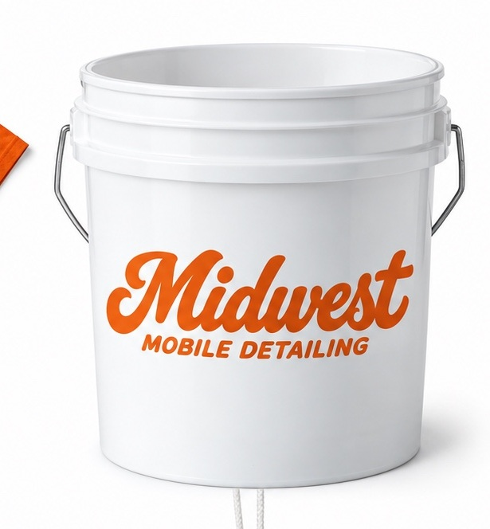

Explore Midwest Mobile Detailing guides, prices, services and appointment tips for Johnson County, Kansas.
Interior Car Detailing
Interior car cleaning at your home in Johnson County. Explore the Cabin Refresh, starting at $159, including carpets, mats, surfaces and interior glass.
Read more →Exterior Car Detailing
Mobile exterior car detailing starting at $89 in Johnson County, Kansas. Foam bath, hand wash, wheel and tire cleaning, exterior glass and paint protection.
Read more →Full Car Detailing
Full mobile car detailing starting at $229. Midwest Full Reset combines interior and exterior cleaning at your Johnson County home.
Read more →Car Pet Hair Removal
Heavy pet hair removal is available with interior and complete mobile details in Johnson County. Send vehicle photos for an estimate.
Read more →Car Carpet & Stain Cleaning
Car carpet and floor mat cleaning with interior and complete details. Heavy Stain Removal is a $40 add-on in Johnson County, Kansas.
Read more →Mobile Car Detailing Prices
Compare mobile detailing starting prices: interior $159, exterior $89 and complete $229. See add-ons and what affects your Johnson County vehicle quote.
Read more →How to Prepare for a Mobile Car Detail
Prepare for your Midwest Mobile Detailing appointment: water and power access, vehicle belongings, parking, weather and booking details.
Read more →Mobile Car Detailing in Olathe, Overland Park & Leawood
Midwest Mobile Detailing serves Johnson County, Kansas, including Olathe, Overland Park and Leawood. Explore mobile detailing packages and location requirements.
Read more →Ready for a cleaner car?
Check the live calendar or text your vehicle details and photos for a quote. Serving Johnson County, Kansas. Water and power access required.